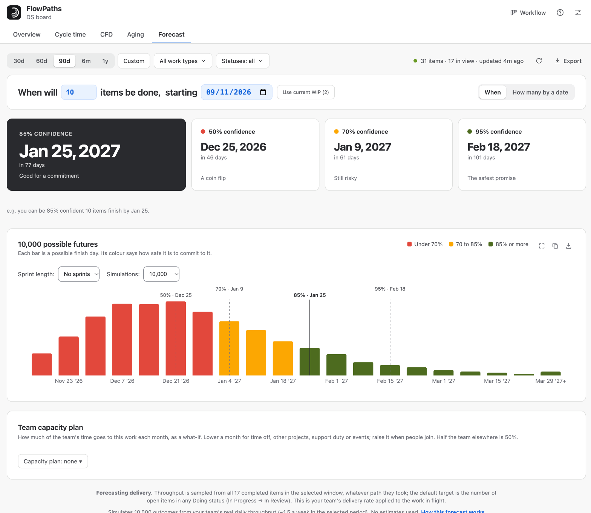
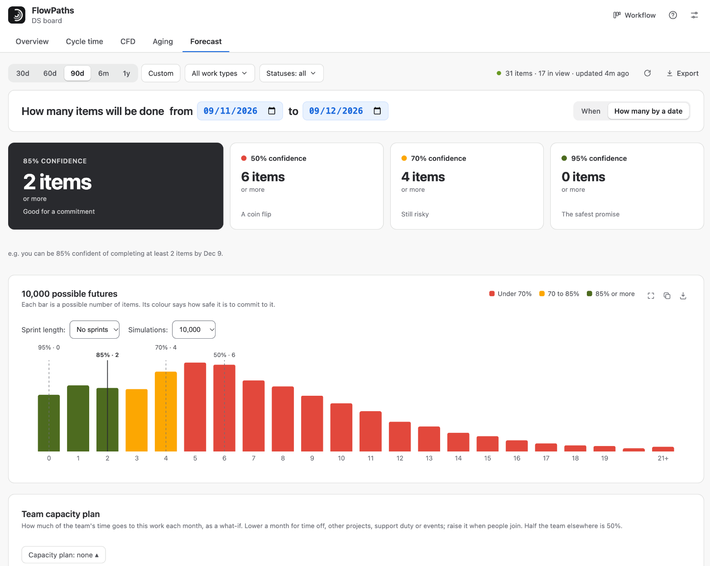
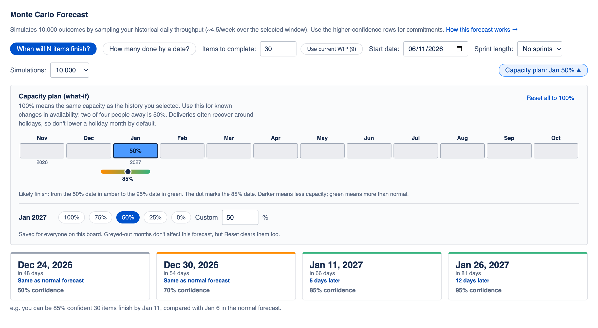
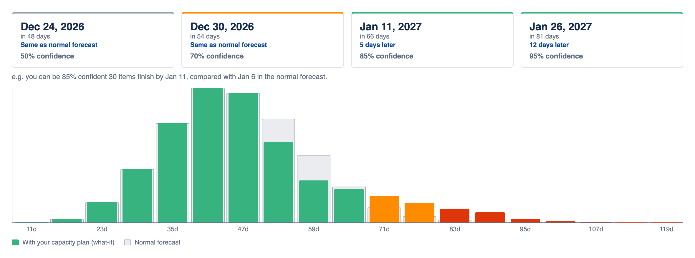
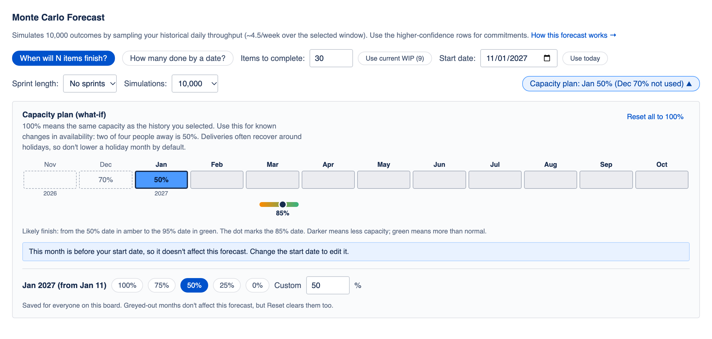
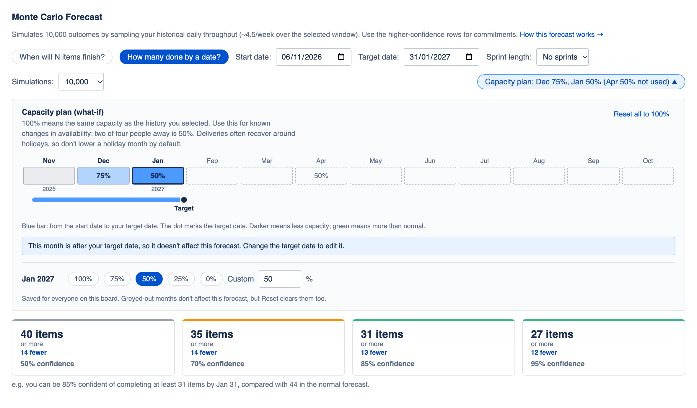
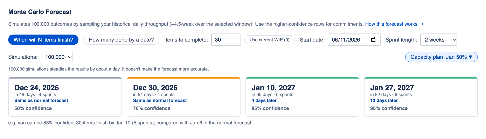

Forecast (Monte Carlo)
Answers "when will this be done?" without asking anyone to estimate.
This is a Monte Carlo simulation. It doesn't guess about individual items — it replays your team's own delivery history thousands of times to see how the future might unfold, and answers two questions: "when will N items finish?" and "how many will be done by a date?"

How it works
1 · Historical sample
For every calendar day in the selected window, FlowPaths counts how many items completed (reached a Done status) — including zero-completion days. That list is your real daily-throughput distribution.
2 · Resample
Each simulated future day is a random pick from one of your team's actual past days. A "future day" in the simulation looks like a randomly chosen day from your history — not a guess or a trend line.
3 · 10,000 trials
This is the default. You can choose 100,000.
- When will N finish? Keep drawing random days, summing completed items, until you reach N — record how many days it took. Repeat 10,000×, giving a distribution of finish times.
- How many by date X? Sum random draws over the number of days until X. Repeat 10,000×, giving a distribution of item counts.
4 · Confidence = percentile
Results are sorted, then read off by percentile.
- For "when", the 85% row is the day by which 85% of the 10,000 simulations had finished — so a higher confidence number means a later date.
- For "how many", FlowPaths reports a lower bound ("at least this many"), so 85% confidence is actually the 15th-percentile count — a higher confidence number here means fewer items, since it's being more cautious about the promise.
Use the 85% or 95% rows for commitments — the same percentiles used on the Scatterplot and Aging WIP.

Planning a forecast
The normal forecast assumes work starts today and that capacity matches your history. If you know otherwise, these controls let you say so. The images in this section use example data.
Start date
For work that has not started, set when it begins. Simulated days start on that date, and results still count from today. It does not check whether the team will be free by then. Use today puts it back.
Capacity plan
- Open the Capacity plan button.
- Click a month on the 12-month strip.
- Choose 100, 75, 50, 25 or 0%, or type a value from 0 to 200.
100% means the same capacity as the history you selected, so two of four people away is 50%. Plan months are calendar months in your Jira site’s timezone.

A capacity plan is a what-if. The normal forecast stays visible, so you can see what the change costs.

How the percentage is applied
- Each simulated day is still a random day from your history.
- Below 100%, each item completed that day counts with that chance, so at 50% each item has an even chance. This keeps the natural variation rather than making the forecast look more certain than it is.
- Above 100%, the day’s count is multiplied. FlowPaths warns you, because this assumes the team will deliver more than in your history.
- Months after the 12-month strip use 100%, and a note says so when a forecast runs past it.
Months that cannot affect the forecast
A month before your start date cannot change the result, and neither can one after your target date in “how many” mode, so those months are greyed out. They keep their values for when the dates change, and Reset all to 100% clears them too.


Who sees what
The capacity plan and sprint length are saved for everyone on the board, and are stored as months and percentages only. Start date and simulations are yours alone, and reset when the app reopens.
Sprints and 100,000 simulations
Sprint length also shows results in sprints of 1 to 4 weeks, counted from the start date. It changes the display only and does not read your Jira sprints. Keep No sprints for Kanban.
Simulations offers 10,000 or 100,000. The 10,000 result stays on screen until the larger run finishes. 100,000 steadies the numbers by about a day, but does not make the forecast more accurate, because the limit is how well your history predicts the future.

Assumptions & limits
- The future resembles the sampled past — no seasonality, trends, or one-off events are modelled, except changes you enter in a capacity plan.
- It counts items by throughput, so every item is treated as equal size (no story points).
- Scope changes and cross-team dependencies aren't modelled.
- More history gives a more reliable forecast — very short windows give noisy results.
Forecasting a single stage
With every Doing status ticked, the forecast uses your whole throughput and answers a delivery question. Untick some, and the sample counts only completed items that passed through the ticked statuses, with the default target being the open items currently in them.